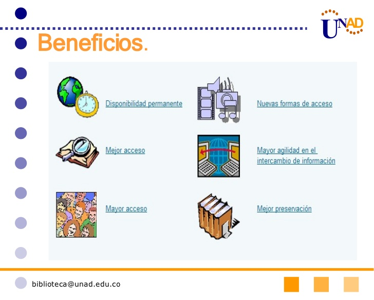

e-Biblioteca es una área de apoyo misional para la comunidad universitaria, cuyo propósito es fortalecer la formación e investigación mediante el uso de servicios apoyados en tecnologías de información y comunicación para el fomento significativo del autoaprendizaje a nivel personal y profesional.
La “e-biblioteca” de la UNAD está conformada a partir de una plataforma tecnológica que
presta diversos como una biblioteca virtual (modalidad e-learning), así como la disposición
de espacios físicos para la consulta física y virtual de recursos bibliográficos en los nodos de
gestión académica denominado Sistema Nacional de Bibliotecas (modalidad b-learning).
RECURSOS DE e-bliblioteca

El acceso de la comunidad académica a los sistemas de consulta a los recursos bibliográficos
en la Universidad se sustenta en una organización de los sistemas disponibles, como las
plataformas de apoyo/servicios a los usuarios de la “e-biblioteca” que permiten conectar
las ocho (8) zonas académicas de la UNAD (7x24x365) y de forma presencial en las sesenta
y dos (62) salas de trabajo colaborativo (salas de lectura y salas de consulta por internet)
con las que la UNAD hace presencia nacional
Los recursos de la “e-biblioteca” están distribuidos en más de cincuenta (50) bases de datos
(las más actualizadas, tales como SCIENCE DIRECT, SCOPUS, PROQUEST, EBSCO, IEEE,
PEARSON, ISI, SCIELO, EBOOK, NTG, E-LIBRO y CAMBRIDGE entre otros) un catálogo
bibliográfico, un (1) descubridor de contenidos, un (1) gestor de contenidos y un (1)
repositorio institucional.